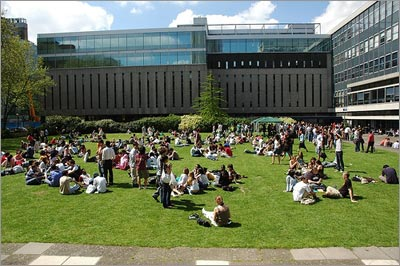

Location
The 16th biennial meeting for the Society for Free Radical Research International (SFRRI) will be held at Imperial College London in the heart of South Kensington in London.
Imperial College London is one of the world's leading centres of excellence for teaching and research in the fields of science, technology and medicine and is in the heart of London’s tourist attractions, restaurants and things to do.
SFRRI 2012 is being held in Imperial College’s SOUTH KENSINGTON campus right in the heart of some of London’s greatest tourist attractions – Natural History Museum, Victoria and Albert Museum and the Royal Albert Hall. To help you with making the most of your visit to London click here for a map of the conferences location.
Other useful maps are:
Street map of South Kensington – click here
Interactive map of South Kensington – click here

Travelling to SFRRI 2012:
South Kensington Campus is easy to travel too – bus, tube, train or air – click here for directions
For further travel information - click here
For further information on buying a London Travel Pass – click here
What to do in London:
For more information on what to do whilst you’re in London please click on the links below. These sites list all London’s events, information on London’s tourist attractions and great places to eat and drink.
www.visitlondon.com
www.timeout.com/london
South Kensington Campus
Imperial College London
Exhibition Road
London SW7 2AZ
UK
Tel :+44 (0)20 7589 5111
Web : www.imperial.ac.uk
{kind=link}
{kind=link}
{kind=link}
{kind=link}
{kind=link}
General Information
Language
The official language of the conference will be English.
Time Zone
In September the UK is set to GMT+1.
Weather
As in most countries in northwest Europe, the weather in the UK can be very changeable from day to day at all times of the year, and the character of each season may vary from one year to another. The average maximum temperature in September is 19°C and the minimum is 13°C. It is recommended that you bring a waterproof jacket.
Currency
The currency used the UK is the Pound £.
Visa
If you are travelling within the European Union you are advised to check entry requirements with your travel agent or consulate before travelling.
Electricity
Voltage is 240-volt and British 3-pin sockets are used. Those travelling from overseas with electrical appliances will need an adapter.
Local Information
www.visitlondon.com
www.timeout.com/london/